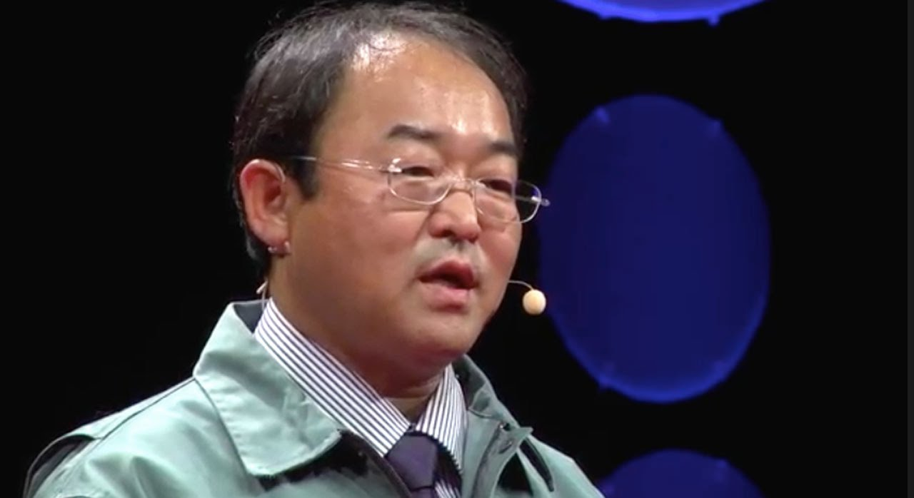
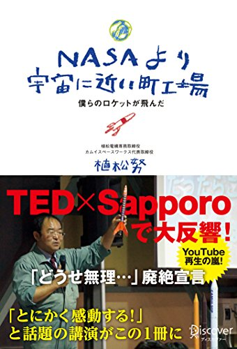
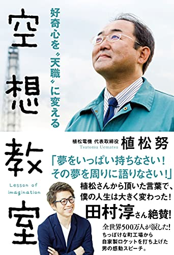
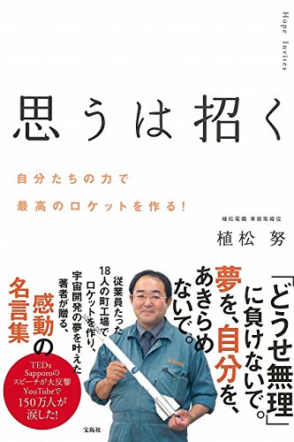
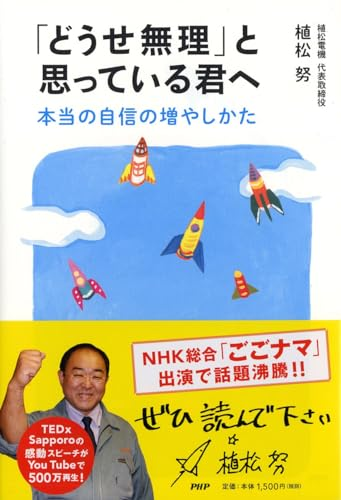
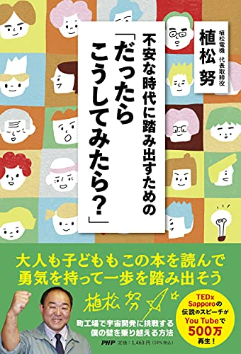
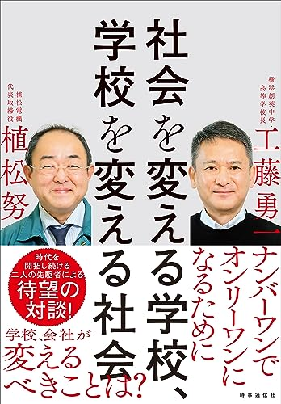
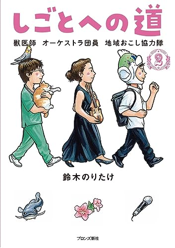

01
思うは招く
思ったら、そうなるよ。
飛行機とロケットをつくりたいと言った中学生の植松さんに、母さんは「無理」とも「頑張ればできる」とも言わず、この言葉だけを渡しました。植松さんはそれを「自分でなんとかしな」と受け取って、寄り道しまくった。それが全部つながって今がある。
ゆるっと読書会 vol.7 ／ おけもんパート特集
植松努さん特集
昨日9月23日、福岡大学の「第4回 新ワクワク学びフェス」で、植松さんの講演を生で聞いてきました。いつもの作業着で、1時間しゃべりっぱなし。冒頭で言ったのは「今日の話の本当の目的は、仲間を探すことです」でした。
↓ COUNTDOWN START

T−7
北海道の赤平で植松電機をやっている人。本業はリサイクル現場で鉄くずを吸い上げるマグネットづくり。そのかたわらでロケットをつくっています。
じいちゃんのひざの上でアポロの月着陸を見る。覚えているのは、じいちゃんの見たことのない笑顔。
通知表には「集団行動ができない」「忘れ物が多い」。夢を話すと先生に「どうせ無理」。
学校に行けなくなった時期がある。母さんが教えてくれたのが「思うは招く」。
家業は父さんと2人の車の修理屋。町の人が減り、仕事がなくなっていく。
解体現場で鉄筋を手で拾う人たちを見て「なんで？」。リサイクル用マグネットが生まれる。
マグネットが生むお金で、ロケットまでつくる会社に。
TEDxSapporoのトークが日本中に広がる。
講演のたびに、いっしょにやる仲間を探しつづけている。
T−6

YouTubeで見る（約21分）TEDxSapporo 2014 ／ 日本語 ／ 約21分
T−5
昨日の講演で、ずっと言いつづけている芯がそのまま聞けました。まず3つ。
思ったら、そうなるよ。
飛行機とロケットをつくりたいと言った中学生の植松さんに、母さんは「無理」とも「頑張ればできる」とも言わず、この言葉だけを渡しました。植松さんはそれを「自分でなんとかしな」と受け取って、寄り道しまくった。それが全部つながって今がある。
夢に数の制限なんかない。
「今日カレーが食べたい」も立派な夢。夢は多いほど絡まり合って叶っていく。「やったことないから無理」じゃなく「やったことないから、やってみたい」。本当の自信は、できないと思っていたことができた時に増える。
「みんながやってるから」は、情報量ゼロ。
人が増える時代は、まねが正解だった。人が減る時代は、まねをすると比べられて安い方が選ばれるだけ。当たり前に「ほんまかいな」と言える人がこれから必要。上を目指すんじゃなく、自分の場所を探す。
T−4
植松電機の稼ぎ頭のマグネットは、解体現場で危ない思いをして鉄筋を拾う人を見た時の「なんでそんなことしてるの？」から生まれました。
発明
足し算じゃなくて、かけ算。どれか1つでも0なら、答えは0。
ゴミを拾う大リーガーがいる。できるのは、まずゴミに気づくから。気づかなければ、いくらでもスルーできる。
「だったら」は科学と一緒に進化していく。でも「おや？」と「なんで？」は、人にしか持てない。
なんでだろう？だったらこうしてみたら？
失敗は、恥ずかしいことじゃなくて貴重なデータ。このふたことで力になる。
T−3
TEDにはなかった、2026年の植松さんの話から。
本には、人生が詰まっている。読めば、それを取り込める。だから長生きできる。
ロケットエンジンが爆発しまくっても誰もけがをしないのは、昔の人が残した失敗の記録を読んでいるから。それが「勉強」だ、という話の流れで。学校はサーキット。
社会にサーキットはない。
優しさには、順位がなかった。
じいちゃんがくれたのは「努は優しいね」。強さや賢さだったら、比べられて諦めていたと思う、と。自分を助ける方法は、大勢を助ける発明になる。
嫌なことは我慢しないで、何が嫌なのか書き出してみる。同じことで困っている人は、ほかにもいっぱいいる。人生はテストじゃない。
ひとりぼっちにならなくていい。
※ 2026年9月23日の講演の音声書き起こしから、おけもんが要旨をまとめたものです。一字一句そのままではありません。
T−2
主な7冊を、出た順に。どれも講演で話すときのままの、やさしい言葉で書かれています。

町工場がロケットをつくるまでの実話。原点の1冊。
Amazon →
TEDxSapporoのスピーチを本にした1冊。
Amazon →
講演の言葉を集めた名言集。刺さったところだけ読める。
Amazon →
「本当の自信」の増やしかた。若い人に語りかける本。
Amazon →
「どうせ無理」を「だったら」に言いかえて、一歩目を。
Amazon →
工藤勇一さんとの対談。受験や学校の話が気になった人へ。
Amazon →
『空想教室』の2024年版。はじめての1冊にいちばん手に取りやすい。
Amazon →
鈴木のりたけ・ブロンズ新社・2023
『大ピンチずかん』の作者が描く、今の仕事にたどり着くまでどれだけ寄り道したかのまんが。「まっすぐ行けないんですよ。挫折しまくって、でも前に進んでいく」。1巻もあります。
「失敗の乗り越え方が書いてある」。TEDでも、ひとりぼっちだった自分を助けてくれたのは本の中のライト兄弟やエジソンだった、と話しています。
雰囲気をつかむなら、TEDを見てから『天職が見つかる空想教室』。背中を押してほしいなら『「どうせ無理」と思っている君へ』。物語が読みたいなら『NASAより宇宙に近い町工場』。
T−1
小さなことでOK。植松さんのマグネットも、現場で見た「おや？」から始まりました。
あの時「だったら」と言えていたら、どうなっていたでしょう。
聞いた人は評論しないで、「だったらこうしてみたら？」を1つだけ返す。「こんな本あったよ」「友だちがやってたよ」で十分。
THREADS
LIFT OFF
だったら
こうしてみたら？
植松さんが講演の最後に「使ってみてください」と言っていた言葉。今夜、ここで使ってみましょう。